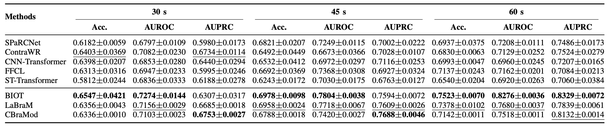
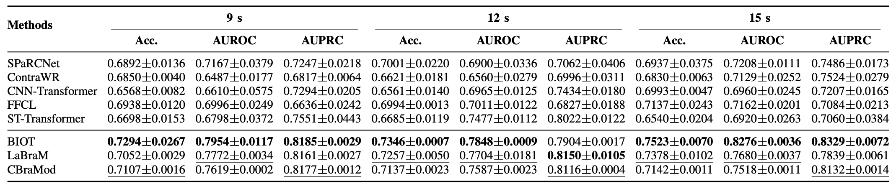

Abstract
Cybersickness remains a major obstacle to the widespread adoption of virtual reality (VR). While current mitigation strategies rely on real-time detection, these methods typically identify symptoms only after onset, leaving limited room for effective intervention. To address this, we introduce an early prediction framework based on electroencephalography (EEG) that forecasts symptom emergence given a short history of neural activity. Using a public dataset with continuous ratings, we propose, to the best of our knowledge, the first EEG-based formulation explicitly targeting early prediction in this domain. Furthermore, to overcome data scarcity, we benchmark the first application of EEG foundation models to cybersickness against strong task-specific architectures. Our experiments confirm that EEG signals contain precursor cues for future cybersickness and demonstrate that foundation models yield significantly more accurate and robust early predictors, highlighting their potential as generalizable backbones for proactive VR safety systems.
Problem Formulation

Illustration of early prediction dataset construction. The top panel shows multichannel EEG segmented into a history Xh(n) around an anchor n. The bottom panel shows the corresponding cybersickness scores, the threshold τ used to define binary labels, and the future horizon over which the future event label yf(n) is computed. The dashed arrows illustrate how the history window and the future event label are combined into a single training sample (Xh(n), yf(n)).

History and horizon configurations in the early prediction setup. Around each anchor, a maximum history Thmax and future horizon Tfmax are defined, and shorter histories and horizons are taken as nested subsegments.
Results
Performance Across Future Horizons

Model performance across future horizons Tf ∈ {30, 45, 60} s at a fixed history length of Th = 15 s. Foundation models (lower block: BIOT, LaBraM, CBraMod) consistently outperform task-specific non-foundation architectures (upper block) across all horizons and metrics. BIOT achieves the best overall performance, with the gap between foundation and non-foundation models widening at longer prediction horizons.
Performance Across Input History Lengths

Model performance across input history lengths Th ∈ {9, 12, 15} s at a fixed future horizon of Tf = 60 s. Foundation models consistently outperform non-foundation models across all history lengths, with BIOT benefiting most from longer input context. Short EEG histories already capture most predictive information, while foundation models make better use of extended context.
Key Findings
Our experiments reveal three key trends:
1. Longer horizons are easier to predict. Performance improves as Tf increases from 30 to 60 s, since a wider future window increases the likelihood of observing at least one cybersickness episode.
2. Short histories capture most information. Varying input history between 9 s and 15 s has a smaller effect than varying the horizon, suggesting short EEG segments already capture most predictive information — though foundation models still benefit from longer histories.
3. Foundation models consistently outperform task-specific architectures. EEG foundation models outperform non-foundation models across all configurations, underscoring the potential of large-scale pre-trained EEG encoders for early cybersickness prediction in VR.